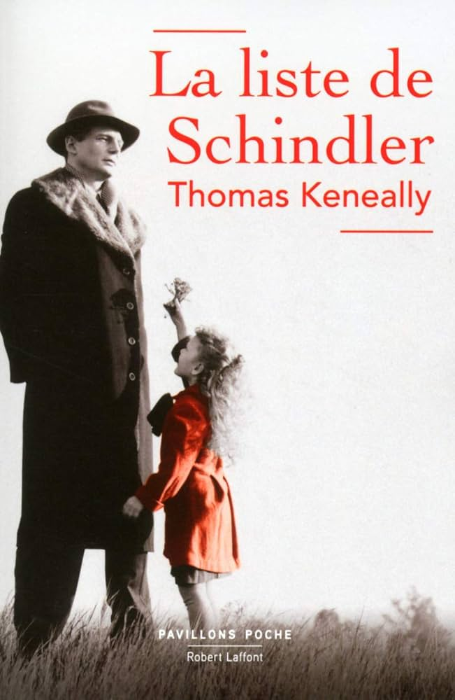

Réalisateur : Steven Spielberg
Date de sortie : 1993
Genre : Drama
Durée : 195 minutes
En 1939, les Allemands installés en Pologne regroupent les Juifs dans des ghettos pour s'en servir comme main d'œuvre bon marché. L'industriel allemand Oskar Schindler espère profiter de la situation pour faire fortune en rachetant une fabrique. Sur les conseils de son comptable Itzhak Stern, il recrute à moindres frais des travailleurs juifs. Peu à peu, Schindler prend conscience de l'horreur de la Shoah et décide d'utiliser toute sa fortune pour sauver ses ouvriers de la mort. En 1944, il parvient à arracher plus de 1 200 Juifs aux camps d'extermination en les faisant inscrire sur une liste de travailleurs indispensables.
Un chef-d'œuvre absolu du cinéma mondial, considéré comme le film le plus personnel de Steven Spielberg. Tourné en noir et blanc pour renforcer l'authenticité de l'époque, il plonge le spectateur dans l'horreur de la Shoah avec une sobriété et une humanité bouleversantes. Liam Neeson, Ben Kingsley et Ralph Fiennes livrent des performances inoubliables dans ce film récompensé par sept Oscars, dont celui du meilleur film et du meilleur réalisateur. La scène de la petite fille au manteau rouge est devenue l'une des images les plus marquantes de l'histoire du cinéma. Un film qu'il faut avoir vu au moins une fois dans sa vie.